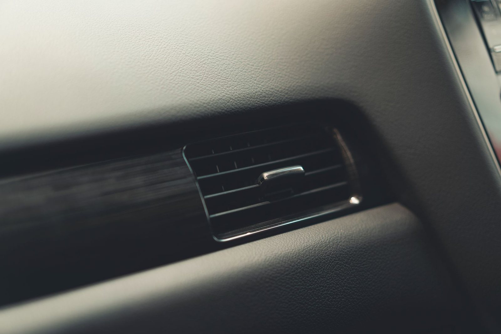

Strona głównaOferta
Przeglądy, naprawyi diagnostyka.
Olej i płyny, klimatyzacja, opony. Każde auto zaczynamy od rozmowy i ceny, zanim cokolwiek odkręcimy.

Przeglądyokresowe.
Przegląd to u nas lista punktów, nie rzut oka spod podnośnika. Sprawdzamy hamulce, zawieszenie, płyny i to, co lubi siadać w Twoim modelu. Na koniec dostajesz krótką rozpiskę: co zrobione, co pilne, co jeszcze poczeka. Bez dopisywania pozycji na siłę.
- Hamulce i zawieszenie
- Płyny, filtry, oświetlenie
- Rozpiska: co pilne, co poczeka

Naprawymechaniczne.
Zawieszenie, hamulce, rozrząd, sprzęgło. Wymieniamy to, co faktycznie siadło, a nie wszystko dookoła. Przed naprawą dostajesz wycenę: osobno części, osobno robocizna. Wyjdzie coś nowego w trakcie? Najpierw telefon do Ciebie, potem dalsza praca.
- Zawieszenie i hamulce
- Rozrząd i sprzęgło
- Wycena przed naprawą

Wymiana olejui płynów.
Płyn hamulcowy i chłodniczy mają swoje terminy, o których łatwo zapomnieć. Stary płyn hamulcowy łapie wodę i wydłuża drogę hamowania. Wymieniamy olej, filtry i płyny, sprawdzamy poziomy i wpisujemy datę oraz przebieg na naklejce. Ty nie musisz pamiętać, auto przypomni.
- Olej i filtry
- Płyn hamulcowy i chłodniczy
- Data i przebieg na naklejce

Diagnostykakomputerowa.
Świeci się kontrolka? Podłączamy tester, czytamy błędy i tłumaczymy po ludzku, co znaczą, bez straszenia. Samo skasowanie błędu to zamiatanie pod dywan, więc szukamy przyczyny: czujnik, przewód czy coś poważniejszego. Wyjeżdżasz z diagnozą i wyceną, nie z zagadką.
- Odczyt i opis błędów
- Szukanie przyczyny
- Diagnoza z wyceną

Klimatyzacjaw aucie.
Serwis klimatyzacji najlepiej robić przed sezonem, nie w pierwszy upał, kiedy dzwoni pół miasta. Oprócz czynnika sprawdzamy filtr kabinowy. Zapchany potrafi udawać zepsutą klimę, a kosztuje ułamek naprawy. Po serwisie w aucie wieje zimnym, a nie stęchlizną.
- Serwis przed sezonem
- Uzupełnienie czynnika
- Filtr kabinowy
Oponyi wulkanizacja.
Wymiana sezonowa, wyważanie, naprawa przebitej opony. W sezonie najlepiej po telefonie, poza sezonem zwykle od ręki. Przy zmianie oglądamy bieżnik i rok produkcji. Jak opony są jeszcze do jazdy, mówimy, że są do jazdy. Nikt tu nie wciska kompletu „bo już czas”.
- Wymiana sezonowa
- Wyważanie kół
- Naprawa przebitej opony
Kontakt
Która usługaCię interesuje?
Zadzwoń i opisz usterkę albo powiedz, czego potrzebuje auto. Powiemy, kiedy możemy je przyjąć i ile to mniej więcej kosztuje.